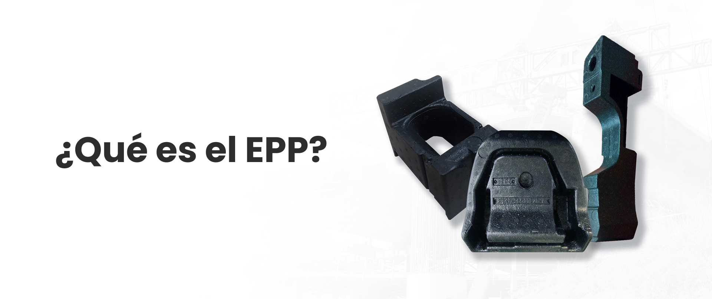

CONOZCA EL EPP
EPP
• El polipropileno expandido (EPP) es un material que suele ser
utilizado en la industria automotriz asi como en la industria
aeronáutica por sus propiedades de resistencia a la temperatura v a la
abrasión.
• Estas piezas son utilizadas en el área automotriz, tales como
respaldos de cabeceras, asientos v como componentes de protección como
parte interna y funcional del auto.
• Sus características pueden ser tan ligeras y a su vez tan rígidas
que pueden servir parafunciones muy delicadas como protecciones para
el ser humano, como protectores De respaldos y cascos de seguridad.